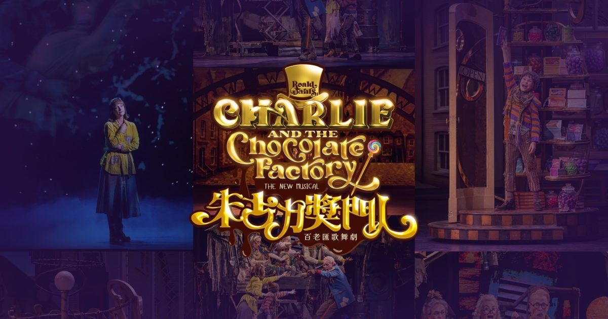
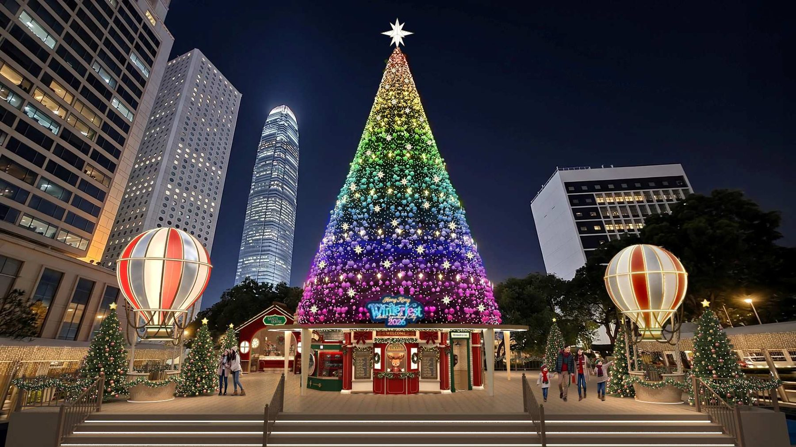
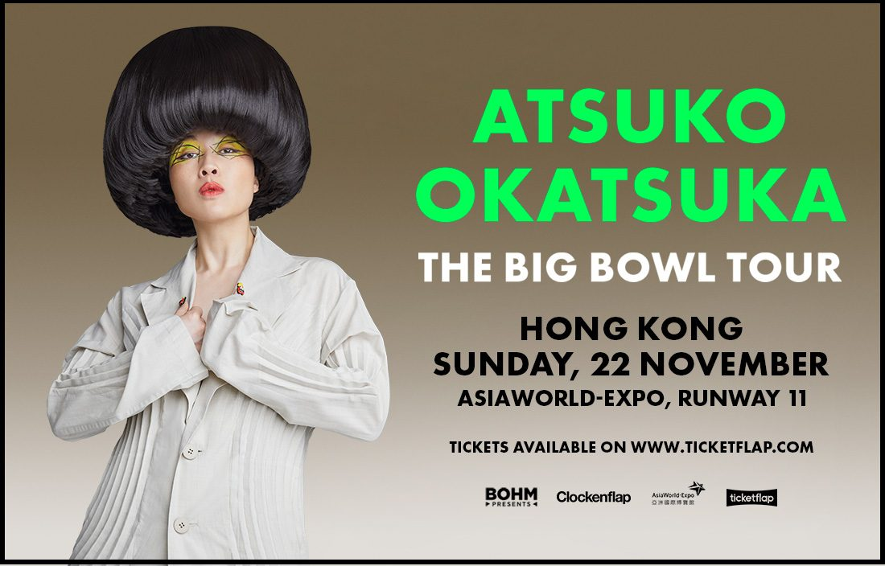
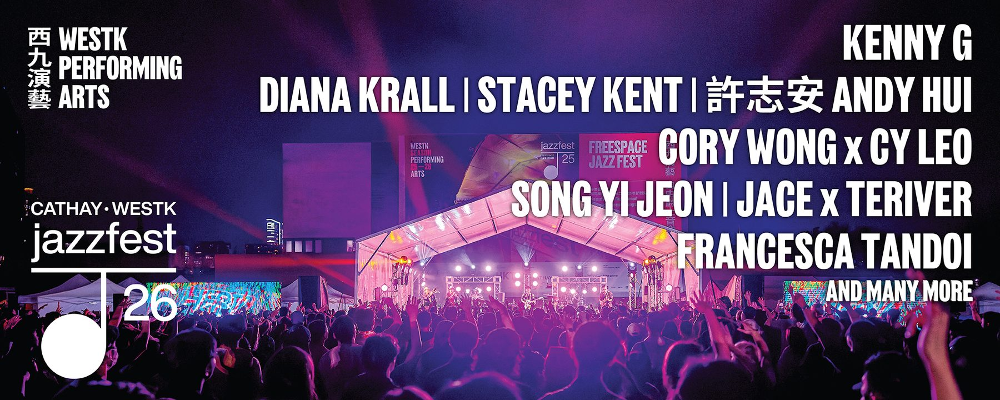
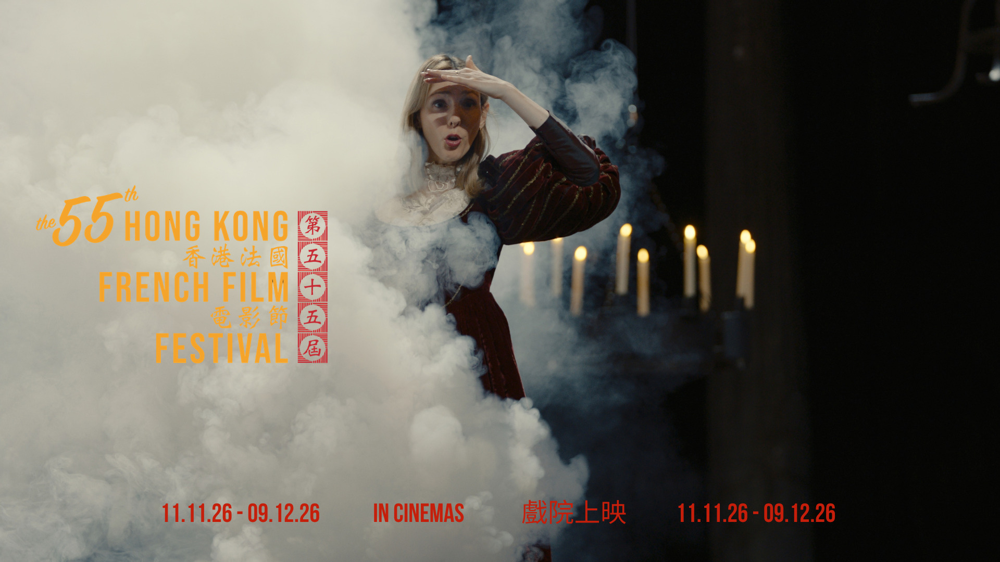

An unofficial weekend magazine · 20–22 November 2026
Hong KongWeekend
A golden ticket at the Cultural Centre, a couture tragedy at West Kowloon, official WinterFest lights already on, the 55th French Film Festival mid-run, jazz on the harbour lawns, and Atsuko Okatsuka’s bowl cut out at the airport.
Editor’s letter
Friday, the official WinterFest lights are already up in Central and Tsim Sha Tsui, and Roald Dahl’s Charlie and the Chocolate Factory is at the Cultural Centre. The 55th Hong Kong French Film Festival is mid-run. Saturday, jazz at Freespace, and Charlie again in the afternoon and evening. Sunday, a nearly three-hour French drama at West Kowloon, a new Cantonese musical at City Hall, and two stand-up comedy bills you cannot reasonably do in the same evening. This is not every event in the city. It is a weekend you could actually have.
Compiled Tuesday 17 November 2026, Asia/Hong Kong (UTC+8)
An unofficial magazine letter, drawn from official calendars and venue pages. Programmes change. Use the linked page before you set out. This is not a government or tourism-board product.
A note on Sunday night
Biswa Kalyan Rath takes the Hong Kong Jockey Club Amphitheatre at the Academy for Performing Arts at 7:30pm. Atsuko Okatsuka takes AsiaWorld-Expo, Runway 11, at 8pm. They are not a double bill. Pick one, and leave time for the Airport Express if you go west.
Theatre
A major musical, a couture tragedy, and a new Cantonese musical open the weekend.

Official promotional image for Roald Dahl’s Charlie and the Chocolate Factory. charliemusicalhk.com.
Musical
Friday evening through Sunday, Tsim Sha Tsui
A golden ticket, still on Salisbury Road.
Roald Dahl’s Charlie and the Chocolate Factory
When
Fri 20 Nov, 7:30pm; Sat 21 Nov, 2:30pm and 7:30pm; Sun 22 Nov, 11:30am and 4:30pm. 145 minutes, including a 20-minute intermission.
Where
Grand Theatre, Hong Kong Cultural Centre, 10 Salisbury Road, Tsim Sha Tsui
Price
Tickets from HK$388 to $1,288. Weekend performances from $488 to $1,288; weekdays from $388 to $1,088, with concession bands listed on the URBTIX November calendar.
Based on Roald Dahl’s novel, Charlie Bucket’s golden-ticket adventure into Willy Wonka’s chocolate factory: chocolate rivers, nut-sorting squirrels and mischievous Oompa-Loompas, with eye-popping visuals and music. Performed in English with Traditional Chinese surtitles. Broadway International Group Limited presents the run, 4 November to 6 December. Eight final shows have been added. Daniel Plimpton plays Willy Wonka; Charlie Bucket is shared by Leo Caravano and Oliver Wong.
Worth knowing
Recommended for ages 6 and above. Children under 14 must be accompanied by an adult at all times. Children aged 3 or below will not be admitted. Arrive 30 minutes early; late arrivals may have to wait for an appropriate moment. No recording until the final curtain call.
A Paris house is sworn to a hundred years of silence over a royal wedding dress. Nguyen follows the people who actually make it. Live cameras throw every stitch onto a split screen. Performed in French, Tamil, English and French Sign Language, with English and Chinese surtitles.
Worth knowing
Children under 15 are not admitted. The production includes depictions of psychological and physical violence, and of suicide. There is only a three-minute break in a nearly three-hour sitting. Arrive 15 minutes early.
Opens Sun 22 Nov, 7:45pm, and runs to 13 Dec. This Sunday is the evening show with Jordan Cheng, Clinton Zhang, Christopher Ying, Tunes Ting, Simon Lou and ManMan Kwok.
Where
Theatre, Hong Kong City Hall
Price
HK$630 (limited VIP) / $580 / $460 / $360
A property scheme collapses into a half-baked kidnapping. Playwright Leung Yu-lim adapts his own novel; Leon Ko and director Fong Chun-kit turn the mess into a Cantonese musical, with Chinese and English surtitles. Two casts share the run.
Worth knowing
Sunday is opening night. Tickets are on Cityline / URBTIX.
The official WinterFest lights are already on in Central and Tsim Sha Tsui.

Christmas Town at Statue Square Gardens, Central. Official image, Hong Kong Tourism Board.
Festival
Already lit, Central and Tsim Sha Tsui, Causeway Bay next week
The official lights are already on.
Hong Kong WinterFest
When
This weekend, and through early January. Central Christmas Town: Fri 20 Nov, 4pm–11:30pm; Sat 21 and Sun 22 Nov, 11am–11:30pm. Central light show: 7pm–11pm daily, every 30 minutes. Tsim Sha Tsui light show: 7pm–11pm daily.
Where
Christmas Town at Statue Square Gardens (North and South), Des Voeux Road Central (MTR Central, Exit K). Tsim Sha Tsui light shows at the Hong Kong Cultural Centre, Museum of Art and Space Museum; watch from the Cultural Centre Viewing Deck and the museum exteriors.
Price
Free admission to Christmas Town and the light shows.
The Hong Kong Tourism Board is staging Hong Kong WinterFest from 18 November 2026 to 5 January 2027, expanded this year to three Winter Wonderlands: Central, Tsim Sha Tsui and Causeway Bay. This weekend, Central and Tsim Sha Tsui are already open.
In Central, a 22-metre Christmas tree anchors Christmas Town at Statue Square Gardens, with displays, interactive booths, a Hot Air Balloon Terminal and a Christmas Express Station. Santa appears on selected days. Which days this weekend are not listed. The Christmas Town lights come on from 6pm daily; last admission is 30 minutes before closing. The light show runs 7pm–11pm, every 30 minutes, across buildings including the Bank of China Building and Tower, Hong Kong City Hall (High Block), the Hong Kong Club Building, HSBC Main Building, Mandarin Oriental, Prince’s Building, Standard Chartered Bank Building and the Court of Final Appeal Building. Crowd control may apply.
Across the harbour, Prudential Hong Kong Winter Wonderland in Tsim Sha Tsui makes its debut: projection mapping at the Hong Kong Cultural Centre, the Museum of Art and the Space Museum, and a Christmas concert inspired by the northern lights. The Hong Kong Tourism Board’s official announcement also names the Clock Tower and “The Stars of Christmas Concert.”
Look ahead: Winter Wonderland in Causeway Bay, in collaboration with Hysan, opens 25 November and runs to 3 January 2027 in the Lee Gardens area, from Hysan Place on Hennessy Road to Lee Garden Six on Leighton Road. The light show runs 7pm–10pm. “Elves’ Night Out” Outdoor Bar is 8–10pm on 25 November, then 5:30pm–10pm from 26 November to 3 January. The Christmas market is listed only as mid-December 2026. MTR Causeway Bay, Exit F2.
Worth knowing
Admission is free. Santa’s days this weekend are not listed, and the Causeway Bay market is dated only as mid-December. Central and Tsim Sha Tsui run to 5 January; Causeway Bay to 3 January. Extended late nights around Christmas and New Year are on the official pages.
Two bills on Sunday night, and you cannot reasonably do both.

Official promotional image, AsiaWorld-Expo.
Stand-up comedy
Sunday night, the airport
The bowl cut returns to the runway.
Atsuko Okatsuka, The Big Bowl Tour
When
Sun 22 Nov, 8:00pm
Where
AsiaWorld-Expo, Runway 11 (Hall 11), Chek Lap Kok
Price
All seated, HK$780 / $680 / $580
Atsuko Okatsuka is a comedian and actress, known for the specials Father and The Intruder, and for the bowl cut this tour is named for. She returns to Hong Kong for one night at AsiaWorld-Expo’s Runway 11, presented by Clockenflap Presents and Bohm Presents., The Intruder, and the haircut the tour is named for.
Worth knowing
Only audiences aged 15 or above are admitted. Bags are discouraged; expect a metal-detector check. Official tickets are sold on Ticketflap. The Airport Express stops at AsiaWorld-Expo.
An evening of laughter, before the machines clock on.
Biswa Kalyan Rath, Inventions
When
Sun 22 Nov, 7:30pm
Where
Hong Kong Jockey Club Amphitheatre, HKAPA
Price
HK$500
Biswa Kalyan Rath is an Indian stand-up comedian who broke through with Pretentious Movie Reviews on YouTube and the special Biswa Mast Aadmi, then made the web series Laakhon Mein Ek, about India’s IIT coaching industry. Later specials include Sushi and Mood Kharab, the latter filmed at London’s Soho Theatre. His world-tour set, Inventions, is English-language stand-up on human inventions and his signature rants, after sold-out dates in North America and India., then made the web series Laakhon Mein Ek, about India’s IIT coaching industry. Later specials include Sushi and Mood Kharab, the latter filmed at London’s Soho Theatre. His world-tour set, Inventions, is English-language stand-up on human inventions and his signature rants, after sold-out dates in North America and India.
Worth knowing
Persons below 16 will not be admitted. Phones must be put away. Same Sunday night as Atsuko at AsiaWorld-Expo. They are not a double bill.
Jazz still has a weekend left on the harbour lawns.

Official promotional image, Cathay · WestK Jazz Fest.
Concert
West Kowloon, all weekend
Jazz, still, on the harbour lawns.
Cathay · WestK Jazz Fest
When
13–24 Nov, including this Friday through Sunday, then a final night on Tuesday 24 Nov.
Where
Xiqu Centre, The Box at Freespace, Wonderland, and the Art Park lawns
Price
Ticketed and free programmes. Cityline charges HK$12 per ticket online.
Cathay · WestK Jazz Fest is the West Kowloon Cultural District’s jazz festival: ticketed indoor concerts and free outdoor sets on the Art Park lawns. The eighth edition still has a weekend left. Francesca Tandoi is at The Box, Freespace, on Sunday 22 Nov at 8pm, tickets HK$400. Saturday at The Box is listed as JACE at 3pm and Teriver Cheung at 8pm (HK$580), with free outdoor sets in Art Park. Confirm remaining seats and the free timetable on Cityline before you go.
Worth knowing
Children under 6 are not admitted to ticketed programmes. Kenny G is listed for the festival’s last night, Tuesday 24 Nov, at Wonderland. Confirm remaining seats on Cityline.
Anne Imhof is a German artist, based between Berlin and New York, whose work brings together performance, choreography, painting, music and installation. She became widely known in 2017, when Faust, her work for the German Pavilion at the Venice Biennale, won the Golden Lion for Best National Participation. House of Swans is her first major solo exhibition in Asia, still charging the rooms at Tai Kwun: oil, bronze, ballet and a city that has come slightly unstuck. The work is set in an imagined future, following a heroine struggling on her path to love through a chaotic cityscape, with Hong Kong Ballet in the galleries at those two weekend sittings. If you want the dance as well as the installation, those are the hours.
Worth knowing
The exhibition runs deep into the new year, but the ballet slots are timed. Check the live Tai Kwun page for remaining performance tickets.
Myths and Monsters: The Art of Fantasy in Asia, 2026. Photo: Lok Cheng. Image courtesy of M+, Hong Kong.
Museum
West Kowloon, late on Friday
Myths, monsters, and a Friday until ten.
Myths and Monsters at M+
When
17 Oct 2026–4 Apr 2027. This weekend: Friday 10am–10pm; Saturday and Sunday 10am–6pm. Closed Mondays.
Where
West Gallery, L2, M+. Also on: Design Ah!, through 10 Jan 2027.
Price
Standard HK$190; concessions $100. Children 6 and under free.
The exhibition runs from ukiyo-e, shadow puppets and Tibetan scrolls through Surrealism, manga, anime and the present: four chapters on fantasy as a tool in Asian visual culture, from the nineteenth century to now. It is the most generous night of the museum week on Friday, when M+ stays open until 10pm.
Worth knowing
Friday is the late night. Weekend days close at 6pm.
From Qing Court in Four Seasons. Official image, Hong Kong Palace Museum.
Museum
West Kowloon
A year inside the Qing court.
Qing Court in Four Seasons, Hong Kong Palace Museum
When
Opened 4 Nov 2026; listed through 3 Nov 2028. Friday and Saturday 10am–8pm; Sunday 10am–6pm.
Where
Gallery 2, Hong Kong Palace Museum
Price
General admission HK$70; concession $35. Children 6 and under free.
Jointly organised with the Palace Museum, the new Gallery 2 show walks a year of Qing court life through the seasons: the imperial calendar first, then spring tilling and weaving, summer at the Chengde Mountain Resort, autumn at the Mulan Hunting Grounds, and winter’s Lunar New Year. Some objects rotate through the two-year run, so what is on the wall this weekend may not be there in three months.
Worth knowing
Friday and Saturday give you the late hours, to 8pm. Pair it with M+ next door if you are already in West Kowloon. But M+ stays open until 10pm on Friday, and only until 6pm on Saturday and Sunday.
Hong Kong’s oldest film festival is mid-run, with a full official weekend still to book.

Official key image, Hong Kong French Film Festival / Alliance Française de Hong Kong.
Film
Through 9 December, around town
Hong Kong’s oldest film festival is mid-run, and still booking.
Hong Kong French Film Festival
When
This weekend, Fri 20–Sun 22 Nov, mid-run of 11 Nov–9 Dec 2026. Eighteen official screenings are listed across the weekend; Saturday’s De Gaulle (I) and Coward screenings at Premiere Elements are marked sold out on the official schedule.
Where
Premiere Elements in West Kowloon, PALACE ifc in Central, MOViE MOViE Pacific Place in Admiralty, Broadway Cinematheque in Yau Ma Tei, the Hong Kong Film Archive in Sai Wan Ho, the Black Box Theatre at the Jockey Club Creative Arts Centre, and other official venues on the festival schedule.
Price
At City Hall and the Hong Kong Film Archive, regular tickets are HK$75, with listed concessions from $58. At PALACE ifc, regular tickets are listed at $110; at Broadway Cinematheque and Premiere Elements, at $95. Confirm other venues, and the screening you want, on the official ticketing page.
Alliance Française de Hong Kong has presented this festival since 1953, and the official history calls it the oldest film festival in the city. The 55th edition is already mid-run this weekend.
If you want the city looking back at you, start with French Frames in Hong Kong.
Friday, 7:10pm, Premiere Elements: a new Phantom of the Opera.
Friday, 7:30pm, MOViE MOViE Pacific Place: Louis Clichy’s Iron Boy, a Special Jury Prize from Un Certain Regard at Cannes.
Saturday, 3:45pm, MOViE MOViE Pacific Place: a new Les Misérables.
Saturday, 7pm, Hong Kong Film Archive: Philippe de Broca’s Chinese Adventures in China (Les tribulations d’un Chinois en Chine), with Jean-Paul Belmondo, in French with English subtitles.
Saturday, Premiere Elements: the opening film, De Gaulle (I): Résistance, is listed as sold out.
Sunday, 4pm, Premiere Elements: De Gaulle (II), Liberté.
Sunday, 5:20pm, Broadway Cinematheque: Godard’s Contempt (Le Mépris), with Brigitte Bardot, in the official tribute to her.
Sunday, 5:30pm, Hong Kong Film Archive: Jean-Marie Poiré’s The Guardian Angels (Les anges gardiens), with Gérard Depardieu and Christian Clavier, in French with English subtitles.
Worth knowing
The festival continues to 9 December. The official highlights page lists introduction sessions and a masterclass with Julien Rejl, artistic director of Directors’ Fortnight; the official programme includes Directors’ Fortnight Extended. Some films had not yet been classified when the programme went online; if a title is later rated Category III, the official ticketing page sets out refunds for ticket holders under 18. Check the official schedule before you set out. Saturday’s Coward screening at Premiere Elements is also listed as sold out.
Announced well in advance, and worth booking before the weekend gets away from you.
Concert
The following weekend, Hung Hom
Gigi, under the Coliseum lights.
Gigi Leung, LOVE Gigi World Tour in Hong Kong 2026
When
Fri 27–Sun 29 Nov, 8:15pm
Where
Hong Kong Coliseum
Price
HK$1,180 / $780 / $480
Gigi Leung is a Hong Kong singer and actress whose first Cantonese album, Love Myself, appeared in November 1996. This Coliseum run marks thirty years in the business and takes its title from that debut: three nights of the LOVE Gigi World Tour, 27–29 November, presented by Ovation Entertainment and its co-presenters. She has said the set will mix the Cantonese and Mandarin songs audiences have been asking for. If you want a seat, this is the week to book.
The eleventh edition: classical music and dance, books, cinema, food and craft, after a decade of India–Hong Kong collaboration. The official programme includes The Violin Trio, Padma Vibhushan awardee Dr. L. Subramaniam with his son Ambi Subramaniam and granddaughter Mahati Subramaniam, and Keelaka Dance Company’s Sakhi, a dance-theatre reimagining of Sita and Draupadi, both at Asia Society Hong Kong Center.
Worth knowing
Book through indiabythebay.com, not through a reseller, and confirm each venue on that site.
A year of no significance, according to the history books.
Zuni Icosahedron, 1587, A Year of No Significance
When
From 27 Nov, with dates into early December
Where
Theatre, Sheung Wan Civic Centre
Price
Most performances HK$380 / $280 / $200. Confirm the date you want on URBTIX
Zuni returns to the Ming year that was supposed to have changed nothing. Adapted from Ray Huang’s 1981 book, with the family’s permission, the 2026 staging, directed by Mathias Woo, and enhanced with arts tech, follows six figures through 1587: the Wanli Emperor, Chang Chu-cheng, Shen Shih-hsing, Hai Rui, Ch’i Chi-kuang and Li Zhi. The production asks: when a vast country tries to replace skills and law with morals, does it predetermine its own demise?
Worth knowing
Opening is the Friday after this one, 27 November. In Cantonese, with Chinese and English surtitles; about three hours, including a 15-minute intermission. Check the exact price tier for the date you want on URBTIX.
Official photograph, Clockenflap, Central Harbourfront, 2025. Photo: Kennevia Photography.
Festival
4–6 December, the harbourfront
Keshi, Hayley Williams, Turnstile, and the harbour.
Clockenflap 2026
When
Fri 4–Sun 6 Dec 2026
Where
Central Harbourfront Event Space, 9 Lung Wo Road
Price
3-day HK$2,180; single day $1,380. Under-18: 3-day $1,680; single day $980. Children under 3 free.
Clockenflap is Hong Kong’s outdoor music and arts festival, first held in 2008. It has grown into an iconic harbourfront weekend: several stages of international, regional and local acts set against the Central skyline, with art installations and a family programme as well as the music. This year’s edition is 4–6 December at the Central Harbourfront Event Space. Keshi headlines Friday, Hayley Williams Saturday, Turnstile Sunday, with Queens of the Stone Age, Slowdive, HYUKOH, The Jesus and Mary Chain, Kim Gordon, Digable Planets, Cheer Chen, N.Y.P.D. and many more. Ticketflap is the only authorised platform.
Worth knowing
Ticketflap is the only authorised platform. Entry needs your ticket and photo ID, and the name must match. Under-16s need a guardian over 18.
Official promotional image, AsiaWorld-Expo, for MIRROR “12 AS 1” LIVE 2026.
Concert
Mid-December, AsiaWorld-Expo
Twelve as one, for a long December.
MIRROR, “12 AS 1” LIVE 2026
When
11–13, 15–21 and 23–26 Dec 2026. An 8:15pm start is listed; confirm each night’s time on the venue page or Klook.
Where
AsiaWorld-Arena (Hall 1)
Price
Seated HK$1,680 / $1,480 / $1,080 / $780. Official tickets via Klook.
MIRROR is Hong Kong’s first large-scale local male singing-and-dancing group: twelve members who came out of ViuTV’s talent show King Maker and debuted on 3 November 2018. The name is meant to suggest that each can stand alone, and that together they reflect many possibilities. “12 AS 1” is the chance to see all twelve on one arena stage, eight years on, in a mid-December run at AsiaWorld-Arena that MakerVille frames as a December carnival. Confirm remaining seats before the festival weeks close in.
Worth knowing
Ages 6 and above; anyone under 16 must be accompanied by a parent or guardian.
Official promotional photograph for ICONIC MOMENT Live in Kai Tak 26/27. Photo: Wing Shya.
Concert
New Year’s Eve, Kai Tak
A stadium, and the year turning.
Aaron Kwok, ICONIC MOMENT Live in Kai Tak 26/27
When
31 Dec 2026, 9:30pm; 1 Jan 2027, 7:30pm. Confirm remaining seats and the start time on the live Kai Tak page before you pay.
Where
Kai Tak Stadium. Confirm on the Kai Tak Sports Park page
Price
HK$480 / $680 / $980 / $1,180 / $1,380 / $1,680, through HK Ticketing and Damai. Confirm on the live Kai Tak page before you pay.
Aaron Kwok is a singer, dancer and actor, and one of Cantopop’s Four Heavenly Kings, the four male stars who defined Hong Kong pop in the 1990s. ICONIC MOMENT is his first appearance at Kai Tak Stadium: a New Year’s Eve countdown on 31 December 2026 and a New Year’s Day concert on 1 January 2027, presented by FWD Insurance. Confirm remaining seats and the start time on the live Kai Tak page before you pay.
Worth knowing
Open the live Kai Tak Sports Park event page before you pay anyone else.
Official promotional image, Hong Kong Philharmonic.
Concert
13 January 2027, Tsim Sha Tsui
Lang Lang, alone, with Mozart to Liszt.
Lang Lang, The Hong Kong Recital
When
Wed 13 Jan 2027, 7:30pm. About two hours, with an intermission. Ages 6 and above.
Where
Hong Kong Cultural Centre Concert Hall
Price
HK$1,980 / $1,480 / $980 / $480. URBTIX; maximum four tickets per transaction.
Lang Lang, the Chinese pianist who played the opening ceremony of the 2008 Beijing Olympics and is among the most recognised classical soloists in the world, comes alone to the Cultural Centre Concert Hall on 13 January 2027. The programme: Mozart’s Rondo in D, Beethoven’s Pathétique and the late A-flat sonata, then Albéniz, Granados and Liszt. Book on the Philharmonic page or URBTIX; the cap is four tickets. and the late A-flat sonata, then Albéniz, Granados and Liszt. Book on the Philharmonic page or URBTIX; the cap is four tickets.
Worth knowing
Remaining seats, if any, are on URBTIX. Maximum four tickets per transaction.
Joey, in the new stadium. Check the official page.
Joey Yung, AURA Tour
When
18, 19, 22, 23 and 24 January 2027. A general sale for the added 19 and 24 January nights is listed from 18 Nov, 12:00 noon, on HK Ticketing and Damai. A 7:30pm start is listed for the nights named. Confirm remaining seats and the start time on the live Kai Tak page before you pay.
Where
Kai Tak Stadium. Confirm on the Kai Tak Sports Park page
Price
HK$1,680 / $1,280 / $980 / $680. Confirm on the live Kai Tak page and its authorised ticketing partners.
Joey Yung is one of the defining female voices of Hong Kong pop of the past two decades. Prudential presents her AURA Tour at Kai Tak Stadium across five January nights, 18, 19, 22, 23 and 24 January 2027, a return to a home stadium stage. A general sale for the added 19 and 24 January shows is listed from 18 November at noon, on HK Ticketing and Damai. Confirm remaining seats and the exact start time on the venue page before you pay.
Worth knowing
Go directly to the Kai Tak Sports Park event page, or to the authorised partners named there. If a sale or an added night is on, it will be there.